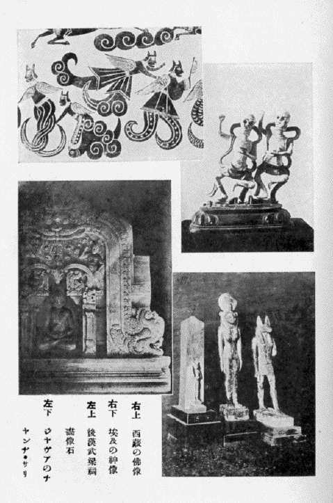

| 妖怪研究 | |
| 伊東 忠太 | |
| (2012) | |
妖怪研究
伊東忠太
一 ばけものの起源
妖怪
の研究
と云
つても、別
に專門
に調
べた譯
でもなく、又
さういふ專門
があるや否
やをも知
らぬ。兎
に角
私
はばけものといふものは非常
に面白
いものだと思
つて居
るので、之
に關
するほんの漠然
たる感想
を、聊
か茲
に述
ぶるに過
ぎない。
私
のばけものに關
する考
へは、世間
の所謂
化物
とは餘程
範圍
を異
にしてゐる。先
づばけものとはどういふものであるかといふに、元來
宗教的信念
又
は迷信
から作
り出
されたものであつて、理想的
又
は空想的
に或
る形象
を假想
し、之
を極端
に誇張
する結果
勢
ひ異形
の相
を呈
するので、之
が私
のばけものゝ定義
である。即
ち私
の言
ふばけものは、餘程
範圍
の廣
い解釋
であつて、世間
の所謂
化物
は一の分科
に過
ぎない事
となるのである。世間
で一口
［＃ルビの「くち」は底本では「くに」］
に化物
といふと、何
か妖怪變化
の魔物
などを意味
するやうで極
めて淺薄
らしく思
はれるが、私
の考
へて居
るばけものは、餘程
深
い意味
の有
るものである。特
に藝術的
に觀察
する時
は非常
に面白
い。
ばけものゝ一面
は極
めて雄大
で全宇宙
を抱括
する、而
も他
の一面
は極
めて微妙
で、殆
ど微
に入
り細
に渉
る。即
ち最
も高遠
なるは神話
となり、最
も卑近
なるはお伽噺
となり、一般
の學術
特
に歴史上
に於
ても、又
一般
生活上
に於
ても、實
に微妙
なる關係
を有
して居
るのである。若
し歴史上
又
は社會生活
の上
からばけものといふものを取去
つたならば、極
めて乾燥無味
［＃「乾燥無味
」は底本では「乾燦無味
」］
のものとなるであらう。隨
つて吾々
が知
らず識
らずばけものから與
へられる趣味
の如何
に豊富
なるかは、想像
に餘
りある事
であつて、確
［＃ルビの「たしか」は底本では「たかし」］
にばけものは社會生活
の上
に、最
も缺
くべからざる要素
の一つである。
世界
の歴史
風俗
を調
べて見
るに、何國
、何時代
に於
ても、化物思想
の無
い處
は決
して無
いのである。然
らば化物
の考
へはどうして出
て來
たか、之
を研究
するのは心理學
の領分
であつて、吾々
は門外漢
であるが、私
の考
へでは「自然界
に對
する人間
の觀察
」これが此
根本
であると思
ふ。
自然界
の現象
を見
ると、或
［＃ルビの「あ」は底本では「ある」］
るものは非常
に美
しく、或
るものは非常
に恐
ろしい。或
は神祕的
なものがあり、或
は怪異
なものがある。之
には何
か其
奧
に偉大
な力
が潜
んで居
るに相違
ない。此
偉大
な現象
を起
させるものは人間以上
の者
で人間以上
の形
をしたものだらう。此
想像
が宗教
の基
となり、化物
を創造
するのである。且
又
人間
には由來
好奇心
が有
る。此
好奇心
に刺戟
せられて、空想
に空想
を重
ね、遂
に珍無類
の形
を創造
する。故
に化物
は各時代
、各民族
に必
ず無
くてならない事
になる。隨
つて世界
の各國
は其
民族
の差異
に應
じて化物
が異
つて居
る。
二 各國のばけもの
ばけものが國
によりそれ〴〵異
なるのは、各國
民族
の先天性
にもよるが、又
土地
の地理的關係
によること非常
に大
である。例
へば日本
は小島國
であつて、氣候
温和
、山水
も概
して平凡
で別段
高嶽峻嶺
深山幽澤
といふものもない。凡
てのものが小規模
である。その我邦
に雄大
な化物
のあらう筈
はない。
古來
我邦
の化物思想
は甚
だ幼稚
で、或
は殆
ど無
かつたと言
つて可
い位
だ。日本
の神話
は化物
の傳説
が甚
だ少
い。日本
の神々
は日本
の祖先
なる人間
であると考
へられて、化物
などとは思
はれて居
ない。それで神々
の内
で別段
異樣
な相
をしたものはない。猿田彦命
が鼻
が高
いとか、天鈿目命
が顏
がをかしかつたといふ位
のものである。又
化物思想
を具體的
に現
はした繪
も餘
り多
くはない。記録
に現
はれたものも殆
ど無
く、弘仁年間
に藥師寺
の僧
景戒
が著
した「日本靈異記
」が最
も古
いものであらう。今昔物語
にも往々
化物談
が出
て居
る。
日本
の化物
は後世
になる程
面白
くなつて居
るが、是
は初
め日本
の地理的關係
で化物
を想像
する餘地
がなかつた爲
である。其後
支那
から、道教
の妖怪思想
が入
り、佛教
と共
に印度思想
も入
つて來
て、日本
の化物
は此爲
に餘程
豊富
になつたのである。例
へば、印度
の三眼
の明王
は變
じて通俗
の三眼
入道
となり、鳥嘴
の迦樓羅王
は變
じてお伽噺
の烏天狗
となつた。又
日本
の小説
によく現
はれる魔法遣
ひが、不思議
な藝
を演
ずるのは多
くは、一半
は佛教
から一半
は道教
の仙術
から出
たものと思
はれる。
日本
が化物
の貧弱
なのに對
して、支那
に入
ると全
く異
る、支那
はあの通
り尨大
な國
であつて、西
には崑崙雪山
の諸峰
が際涯
なく連
り、あの深
い山岳
の奧
には屹度
何
か怖
しいものが潛
んでゐるに相違
ないと考
へた。北
にはゴビの大沙漠
があつて、これにも何
か怪物
が居
るだらうと考
へた。彼等
はゴビの沙漠
から來
る風
は惡魔
の吐息
だと考
へたのであらう。斯
くて支那
には昔
から化物思想
が非常
に發達
し中
には極
めて雄大
なものがある。尤
も儒教
の方
では孔子
も怪力亂神
を語
らず、鬼神妖怪
を説
かないが道教
の方
では盛
に之
を唱道
するのである。

形
に現
はされたもので、最
も古
いと思
はれるものは山東省
の武氏祠
の浮彫
や毛彫
のやうな繪
で、是
は後漢時代
のものであるが、其
化物
は何
れも奇々怪々
を極
めたものである。山海經
を見
ても極
めて荒唐無稽
なものが多
い。小説
では西遊記
などにも、到
る處
痛烈
なる化物思想
が横溢
して居
る。歴史
で見
ても最初
から出
て來
る伏羲氏
が蛇身
人首
であつて、神農氏
が人身
牛首
である。恁
ういふ風
に支那人
は太古
から化物
を想像
する力
が非常
に強
かつた。是皆
國土
の關係
による事
と思
はれる。
更
に印度
に行
くと、印度
は殆
ど化物
の本場
である。印度
の地形
も支那
と同
じく極
めて廣漠
たるもので、其
千里
の藪
があるといふ如
き、必
ずしも無稽
の言
ではない。天地開闢以來
未
だ斧鉞
の入
らざる大森林
、到
る處
に蓊鬱
として居
る。印度河
、恒河
の濁流
は澎洋
として果
も知
らず、此
偉大
なる大自然
の内
には、何
か非常
に恐
るべきものが潛
んで居
ると考
へさせる。實際
又
熱帶國
には不思議
な動物
も居
れば、不思議
な植物
もある。之
を少
し形
を變
へると直
ぐ化物
になる。印度
は實
に化物
の本場
であつて、神聖
なる史詩
ラーマーヤナ等
には化物
が澤山
出
て來
る。印度教
に出
て來
るものは、何
れも不思議
千萬
なものばかり、三面
六臂
とか顏
や手足
の無數
なものとか、半人
半獸
、半人
半鳥
などの類
が澤山
ある。佛教
の五大
明王等
も印度教
から來
て居
る。
印度
から西
へ行
くと、ペルシヤが非常
に盛
である。ペルシヤには例
の有名
なルステムの化物退治
の神話
があり、アラビヤには例
の有名
なアラビヤンナイトがある。埃及
もさうである。洋々
たるナイル河
、荒漠
たるサハラの沙漠
、是等
は大
に化物思想
の發達
を促
した。埃及
の神樣
には化物
が澤山
ある。併
し之
が希臘
へ行
くと餘程
異
り、却
［＃ルビの「かへ」は底本では「かへつ」］
つて日本
と似
て來
る。これ山川
風土
氣候等
、地理的關係
の然
らしむる所
であつて、凡
てのものは小
じんまりとして居
り、隨
つて化物
も皆
小規模
である。希臘
の神
は皆
人間
で僅
にお化
はあるが、怖
くないお化
である。夫
は深刻
な印度
の化物
とは比
べものにならぬ。例
へば、ケンタウルといふ惡神
は下半身
は馬
で、上半身
は人間
である。又
ギカントスは兩脚
が蛇
で上半身
は人間
、サチルスは兩脚
は羊
で上半
が人間
である。凡
そ眞
の化物
といふものは、何處
の部分
を切
り離
しても、一種
異樣
な形相
で、全體
としては渾然
一種
の纏
まつた形
を成
したものでなければならない。然
るに希臘
の化物
の多
くは斯
の如
く繼合
せ物
である。故
に眞
の化物
と言
ふことは出來
ないのである。然
らば北歐羅巴
の方面
はどうかと見遣
るに、此
方面
に就
ては私
は餘
り多
く知
らぬが、要
するに幼稚
極
まるものであつて、規模
が極
めて小
さいやうである。つまり歐羅巴
の化物
は、多
くは東洋思想
の感化
を受
けたものであるかと思
ふ。
以上
述
べた所
を總括
して、化物思想
はどういふ所
に最
も多
く發達
したかと考
へて見
るに、化物
の本場
は是非
熱帶
でなければならぬ事
が分
る。熱帶地方
の自然界
は極
めて雄大
であるから、思想
も自然
に深刻
になるものである。そして熱帶
で多神教
を信
ずる國
に於
て、最
も深刻
な化物思想
が發達
したといふ事
が言
へる。縱令
熱帶
でなくとも、多神教國
には化物
が發達
した。例
へば西藏
の如
き、其
喇嘛教
は非常
に妖怪的
な宗教
である。斯樣
にして印度
、亞刺比亞
、波斯
から、東
は日本
まで、西
は歐羅巴
までの化物
を總括
して見
ると、化物
の策源地
は亞細亞
の南方
であることが分
るのである。
尚
化物
に一の必要條件
は、文化
の程度
と非常
に密接
の關係
を有
する事
である。化物
を想像
する事
は理
にあらずして情
である。理
に走
ると化物
は發達
しない。縱令
化物
が出
ても、其
は理性的
な乾燥無味
なものであつて、情的
な餘韻
を含
んで居
ない。隨
つて少
しも面白味
が無
い。故
に文運
が發達
して來
ると、自然
化物
は無
くなつて來
る。文化
が發達
して來
れば、自然
何處
か漠然
として稚氣
を帶
びて居
るやうな面白
い化物思想
などを容
れる餘地
が無
くなつて來
るのである。
三 化物の分類
以上
で大體
化物
の概論
を述
べたのであるが、之
を分類
して見
るとどうなるか。之
は甚
だ六ヶしい問題
であつて、見方
により各
異
る譯
である。先
づ差當
り種類
の上
からの分類
を述
べると、
（一）神佛
（正體
、權化
）
（二）幽靈
（生靈
、死靈
）
（三）化物
（惡戲
の爲
、復仇
の爲
） （四）精靈
（五）怪動物
の五となる。
（一）の神佛
はまともの物
もあるが、異形
のものも多
い。そして神佛
は往々
種々
に變相
するから之
を分
つて正體
、權化
の二とすることが出來
る。化物的神佛
の實例
は、印度
、支那
、埃及方面
に極
めて多
い。釋迦
が［＃「釋迦
が」は底本では「釋迦
か」］
既
にお化
けである。卅二相
を其儘
現
はしたら恐
ろしい化物
が出來
るに違
ひない。印度教
のシヴアも隨分
恐
［＃ルビの「おそろ」は底本では「おそ」］
しい神
である。之
が權化
して千種
萬樣
の變化
を試
みる。ガネーシヤ即
ち聖天樣
は人身
象頭
で、惡神
の魔羅
は隨分
思
ひ切
つた不可思議
な相貌
の者
ばかりである。埃及
のスフインクスは獅身
人頭
である。埃及
には頭
が鳥
だの獸
だの色々
の化物
があるが皆
此内
である。此
（一）に屬
するものは概
して神祕的
で尊
い。
化物
の分類
の中
、第
二の幽靈
は、主
として人間
の靈魂
であつて之
を生靈
死靈
の二つに分
ける。生
［＃ルビの「い」は底本では「き」］
きながら魂
が形
を現
はすのが生靈
で、源氏物語
葵
の卷
の六條
御息所
の生靈
の如
きは即
ち夫
である。日高川
の清姫
などは、生
きながら蛇
になつたといふから、之
も此
部類
に入
れても宜
い。死靈
は、死後
に魂
が異形
の姿
を現
はすもので、例
が非常
に多
い。其
現
はれ方
は皆
目的
に依
つて異
なる。其
目的
は凡
そ三つに分
つことが出來
る。一は怨
を報
ずる爲
で一番
怖
い。二は恩愛
の爲
で寧
ろいぢらしい。三は述懷的
である。一の例
は數
ふるに遑
がない。二では謠
の「善知鳥
」など、三では「阿漕
」、「鵜飼
」など其
適例
である。幽靈
は概
して全體
の性質
が陰氣
で、凄
いものである。相貌
なども人間
と大差
はない。
第
三の化物
は本體
が動物
で、其
目的
によつて惡戯
の爲
と、復仇
の爲
とに分
つ、惡戯
の方
は如何
にも無邪氣
で、狐
、狸
の惡戯
は何時
でも人
の笑
ひの種
となり、如何
にも陽氣
で滑稽的
である。大入道
、一つ目
小僧
などはそれである。併
し復仇
の方
は鍋島
の猫騷動
のやうに隨分
しつこい。
第
四の精靈
は、本體
が自然物
である。此
精靈
の最
も神聖
なるものは、第
一の神佛
の部
に入
る。例
へば日本國土
の魂
は大國魂命
となつて神
になつてゐる如
きである。物
に魂
があるとの想像
は昔
からあるので、大
は山岳
河海
より、小
は一本
の草
、一朶
の花
にも皆
魂
ありと想像
した。即
ち「墨染櫻
」の櫻
「三十三間堂
」の柳
、など其
例
で、此等
は少
しも怖
くなく、極
めて優美
なものである。
第
五の怪動物
は、人間
の想像
で捏造
したもので、日本
の鵺
、希臘
のキミーラ及
グリフイン等
之
に屬
する。龍
麒麟等
も此中
に入
るものと思
ふ。天狗
は印度
では鳥
としてあるから、矢張
此中
に入
る。此
第
五に屬
するものは概
して面白
いものと言
ふことが出來
る。
以上
を概括
して其
特質
を擧
げると、神佛
は尊
いもの、幽靈
は凄
いもの、化物
は可笑
しなもの、精靈
は寧
ろ美
しいもの、怪動物
は面白
いものと言
ひ得
る。
四 化物の表現
此等
樣々
の化物思想
を具體化
するのにどういふ方法
を以
てして居
るかといふに、時
により、國
によつて各々
異
なつてゐて、一概
に斷定
する事
は出來
ない。例
へば天狗
にしても、印度
、支那
、日本
皆
其
現
はし方
が異
なつて居
る。龍
なども、西洋
のドラゴンと、印度
のナーガーと、支那
の龍
とは非常
に現
し方
が違
ふ。併
し凡
てに共通
した手法
の方針
は、由來
化物
の形態
には何等
か不自然
な箇所
がある。それを藝術
の方
で自然
に化
さうとするのが大體
の方針
らしい。例
へば六臂
の觀音
は元々
大化物
である、併
し其
澤山
の手
の出
し方
の工夫
によつて、其
手
の工合
が可笑
しくなく、却
つて尊
く見
える。決
して滑稽
に見
えるやうな下手
なことはしない。此處
に藝術
の偉大
な力
がある。
此
偉大
な力
を分解
して見
ると。一方
には非常
な誇張
と、一方
には非常
な省略
がある。で、これより各論
に入
つて化物
の表現
即
ち形式
を論
ずる順序
であるか、今
は其
暇
がない。若
し化物學
といふ學問
がありとすれば、今
まで述
べた事
は、其
序論
と見
るべきものであつて、茲
には只
序論
だけを述
べた事
になるのである。
要
するに、化物
の形式
は西洋
は一體
に幼稚
である。希臘
や埃及
は多
く人間
と動物
の繼合
せをやつて居
る事
は前
に述
べたが、それでは形
は巧
に出來
ても所謂
完全
な化物
とは云
へない。ローマネスク、ゴシツク時代
になると、餘程
進歩
して一の纏
まつたものが出來
て來
た。例
へば巴里
のノートルダムの寺塔
の有名
な怪物
は繼合物
ではなくて立派
に纏
まつた創作
になつて居
る。ルネツサンス以後
は論
ずるに足
らない。然
るに東洋方面
、特
に印度
などは凡
てが渾然
たる立派
な創作
である。日本
では餘
り發達
して居
なかつたが、今後
發達
させようと思
へば餘地
は充分
ある。日本
は今
藝術上
の革命期
に際
して、思想界
が非常
に興奮
して居
る。古今東西
の思想
を綜合
して何物
か新
しい物
を作
らうとして居
る。此
機會
に際
して化物
の研究
を起
し、化物學
といふ一科
の學問
を作
り出
したならば、定
めし面白
からうと思
ふのである。昔
の傳説
、樣式
を離
れた新化物
の研究
を試
みる餘地
は屹度
あるに相違
ない。（完）
（大正六年「日本美術」）
底本：「木片集」萬里閣書房
１９２８（昭和3
）年5
月28
日発行
１９２８（昭和3
）年6
月10
日4
版
初出：「日本美術」
１９１７（大正6
）年
※底本は、物を数える際や地名などに用いる「ヶ」（区点番号5-86）を、大振りにつくっています。
入力：鈴木厚司
校正：しだひろし
２００７年11
月22
日作成
青空文庫作成ファイル：
このファイルは、インターネットの図書館、青空文庫（http://www.aozora.gr.jp/）で作られました。入力、校正、制作にあたつたのは、ボランティアの皆さんです。